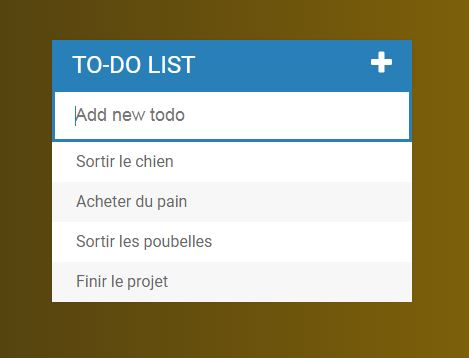

Vous trouverez sur ce site tout mes projets. La majeure partie des idées de projet provient de la formation que j'ai suivi sur udemy.com, cependant je suis seul responsable du code.
Checklist

Une petite appli qui sert à noter les tâches à faire. Le contenu est stocké en Local storage, il sera enregistré et restitué même si vous fermez le navigateur ou éteingnez l'ordinateur.
RGB game

Un jeu qui consiste à trouver à quelle case de couleur se rapporte au code RGB en haut de l'ecran. le RGB(red, green, blue) est un système de codage informatique des couleurs.
Patatap

Une appli qui associe les touches de clavier à un son enregistré, le tout animé. les librairies paper.js et howler.js ont été utilisé respectivement pour l'animation et les sons
Livret de règle

Un livret de règle que j'ai rédigé, désigné, mis en forme, et animé pour simuler un vrai livre grace à la librairie turn.js
Mes formations
2019-2020- Udemy / Colt Steele - Web Developer Bootcamp course
- HTML5
- CSS3
- JavaScript
- Bootstrap 4
- DOM Manipulation
- jQuery
2017-2019- CNAM - Analyste développeur Formation RNCP de niveau 2, interrompue à la 2eme année par manque d'effectif
- Langages web et BDD (HTML5, CSS, PHP, JS, MySQL)
- Projet (site html figé et site PHP dynamique)
- Réseau
- Maquette de site et retouche d'image (GIMP, Inkscape)
2013-2015- Faculté d'économie et gestion - Aix en provence - Licence Eco, spécialité Eco-Management interrompue à la 2eme année, erreur de carrière
- Macro-économie
- Micro-économie
- Théorie des jeux
- Statistiques
- Comptabilité
- Calculs matriciels
- fonction Cobb-Douglas
2012- Lycée méditerranée - La Ciotat - Obtention du Bac Economique et social, Spécialité Eco
Expériences professionnelles
2014-2019- La poste- Marseille 11e et 13e, Aubagne, La Ciotat,
Carnoux, Cassis- Gestionnaire de clientèle
Plus d'une quinzaine de missions en tant qu'intérimaire allant de 3 mois à
quelques jours.
Accueil, conseils, services aux clients dans les domaines bancaire, courrier
et téléphonie. Travail alimentaire qui m'a permis de poursuivre dans la voie du développement